汐白のHEVD学习——环境调试
环境准备
win10 x64 VM虚拟机一台
这里是用的微软官方纯净镜像VS 2019- 本地：Windows调试环境，内核驱动编译环境（
WDK、ADK、SDK、Windbg）
此处参考：https://docs.microsoft.com/en-us/windows-hardware/drivers/download-the-wdk
win10虚拟机环境配置
~本来不想记录这个像是计算机初学者的记录过程的，但是配置环境又遇见bug了，去网上找了好多文章没找到原因。这里猜测应该是~bcdedit的某个设置不必要并且设置完之后有问题，所以一直翻车，最后一次配置记得参考的文章少用了一两个设置然后就能用了emm
- 串口设置
设置vm虚拟机硬件如下图所示：(如果存在打印机或其他类似硬件设置请务必移除)
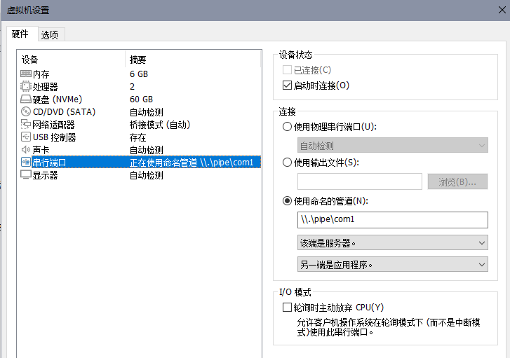
vm虚拟机添加串行接口。（对于接口概念的学习理解：同频率下，串行接口，数据流单线性传输，相交并行接口传输速率慢但稳定可靠；并行接口，二进制数据流可以一次多线并行同时传输多位，虽然传输速率倍数级别提升，但相应的会降低可靠性。）
串行端口设置：
- 使用命名管道
- 命名管道内容：
\\.\pipe\com1 - 该端是服务器
- 另一端是应用程序
这里解释一下为什么移除打印机等设备确保虚拟机硬件设置和上图一样：本文章记录的双机调试是通过串口通道进行的，而串口在这里可以先简单的理解为类似网络端口的存在且可以被打印机这种设备占用；而网络端口大家应该都了解，每个端口号只能被一个服务占用，这里就是一样的道理，把其他会占用到 串行端口 的设备都移除，那我们双机调试用到的 串口号 就是默认的 1 了。
另外，管道内容的格式其实是：\\.\pipe\自定义名字，一般图方便都会用 com1 or com_1。
- 为虚拟机设置调试环境
管理员权限打开命令提示符，执行：
1 | bcdedit /dbgsettings serial baudrate:115200 debugport:1 |
这里的 debugport 就是前面说到的串行端口号。如果打印机或类似设备不移除的话，1 可能就是对应的它们了。
重启计算机，可以在系统选择界面看到我们刚刚新设置的系统模式，选择它启动。
进入系统后再次管理员权限打开命令提示符，执行：
1 | bcdedit /set testsigning on |
此时系统开启测试模式，可以看到虚拟机屏幕右下角多出来如下小字：(红圈圈住的要留意，下面会用到)
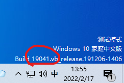
- 本地
windbg preview调试虚拟机测试
windbg preview 可在 win10应用商店 下载.
打开后，左上角 文件 -> attach to kernel ：
- 勾选
pipe resets填0baud rate填115200port填前面给虚拟机设置的管道名\\.\pipe\com1
然后 OK 即可。此时调试器会自动向设置的串口发起连接，只需要虚拟机正在运行或者启动虚拟机即可连接成功。

windbg的一些基操
dt：显示有关局部变量、全局变量或数据类型的信息。这可以显示有关简单数据类型以及结构和联合的信息。
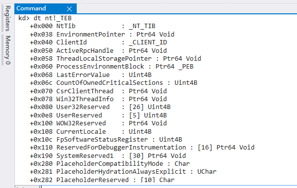dt -r：单纯的dt命令不会输出子结构的内容，加上-r参数可以递归输出子结构内容。同时，在-r参数后还能在添加一个数字n用来控制递归深度
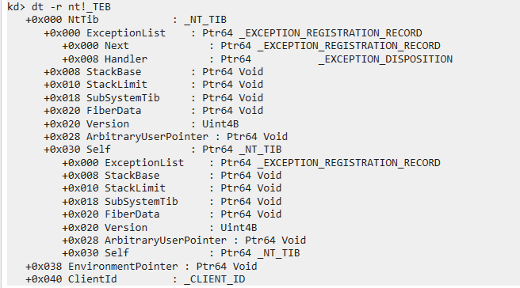
ba：设置内存（硬件）断点。内存（硬件）断点和普通断点的区别在于，普通断点针对被执行的指令，当cpu执行到我们所下断点位置的指令时，停止在这里等待用户操作；而内存（硬件）断点针对的是数据，当我们所指定的数据被访问时即可触发中断，这里的访问方式包括执行、写、读三种操作，我们可以自行指定具体是对什么数据进行了什么操作才会触发中断。ba e 1 nt!ZwCreateFile：e表示断点指定的数据被执行时触发，1表示断点的数据大小为一字节，nt!ZwCreateFile是ZwCreateFile的地址。- 只想让程序断在某个线程上。比如说：有多个线程都会访问该数据，但我们只想让id为1的线程访问时被中断，就可以在断点命令前加上参数
~1，即：~1 ba e 1 nt!ZwCreateFile
bl：列出当前的断点
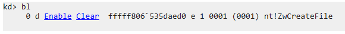be：开启指定的断点bd：关闭指定的断点r：查看寄存器状态u：反编译指定地址处的汇编代码uf：反编译整个函数的汇编代码ub：反编译指定地址之前的汇编代码g：运行
本地windows内核编译环境配置
跟着微软官方文档配置即可：https://docs.microsoft.com/en-us/windows-hardware/drivers/download-the-wdk
wdk的版本一定要和虚拟机的系统版本一致！
具体版本号见虚拟机右下角（此时虚拟机应已经）
安装完wdk再去给 vs2019 安装对应版本的 sdk 。
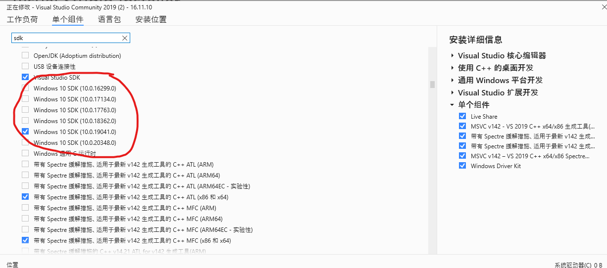
至此，需要安装的环境都已就绪，我们尝试一下是否能正常工作。
首先确保虚拟机开启；
然后到本地C盘找到该文件：C:\Program Files (x86)\Windows Kits\10\Remote\x64\WDK Test Target Setup x64-x64_en-us.msi。注意：我这里是64位win10 intel的cpu，所以选的 10 和 x64，请务必根据自己的虚拟机系统版本前往对应路径。
将该文件传入虚拟机，运行安装。
之后回到本地打开vs2019，调试->附加到进程：
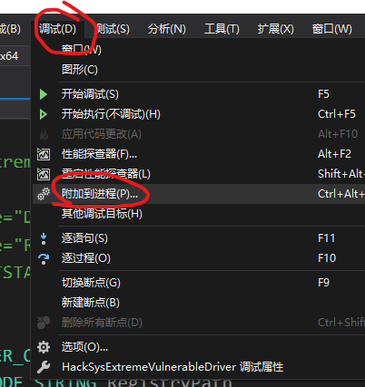
选择内核模式调试器：
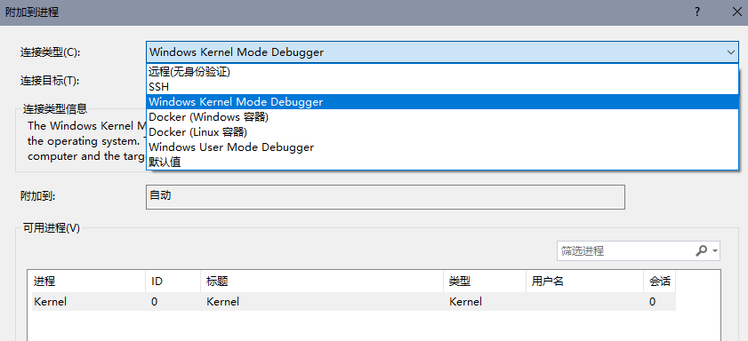
连接目标点查找添加对应配置：
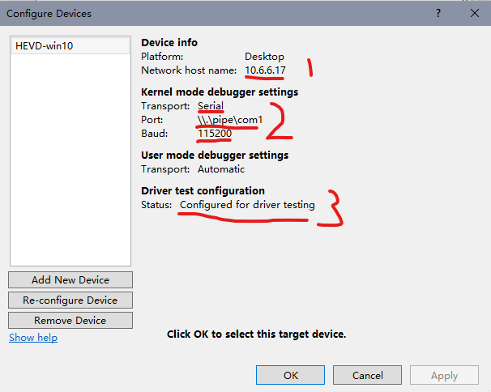
- 1：虚拟机的ip，这里我用的是桥接网络，如果是nat网络应该可以用虚拟机的主机名代替
- 2：和前文虚拟机的设置对应即可，如果完全按照本文操作那此处应一模一样
- 3：如图所示是正常情况，如果显示和图中不一样，请自行查阅资料
然后点击附加即可，如果一切正常，你应该会看到一个和 windbg 一样的输出。
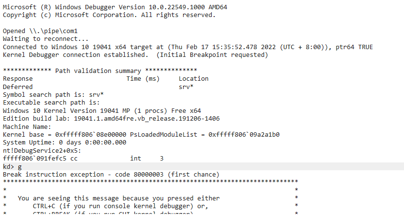
温馨小提示
如果vs2019在附加到虚拟机内核进程时一直报错，请直接无视它，不要为他浪费时间。
然后关闭你的代理，打开本地win10的应用商店，搜索 WinDbg Preview ，然后获取安装。
安装完毕后打开,点击左上角文件，选择 attach to kernel：
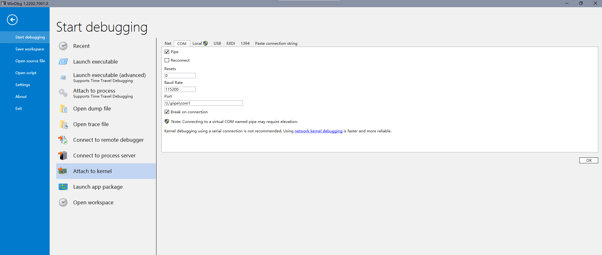
输入相关配置之后，点击 OK ，此时如果能得到上述输出，那么也是一切正常的，之后完全可以仅通过 windbg preview 调试，vs2019 只用来进行代码的编写、程序的编译。